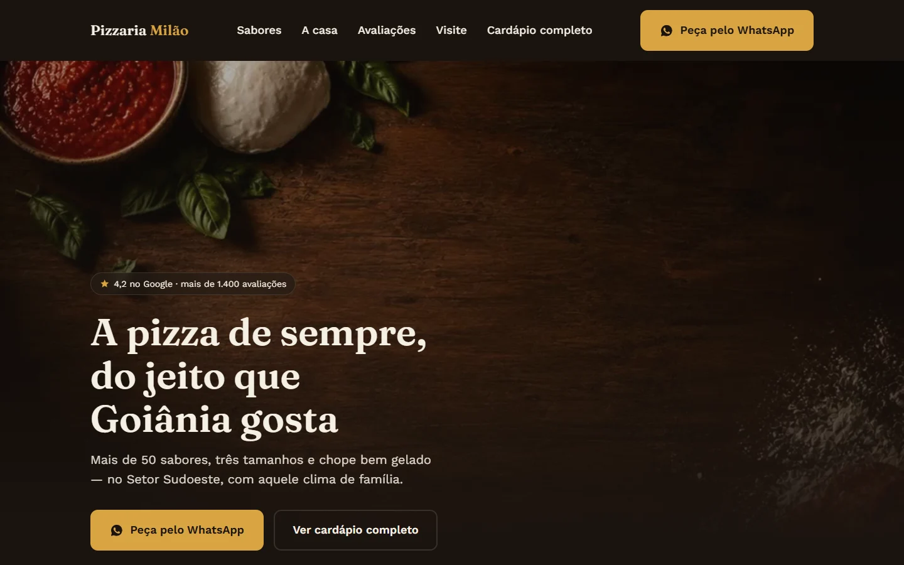

01 / WEB DESIGN
Milão Pizzaria
A website for Milão Pizzaria, with a homepage and digital menu. A project focused on the business's online presence.
WebsiteDigital menu
PORTFOLIO / PROJECTS
A selection of my development and web design work. Explore the project and see the result.

A website for Milão Pizzaria, with a homepage and digital menu. A project focused on the business's online presence.
There are no published projects in this category yet.